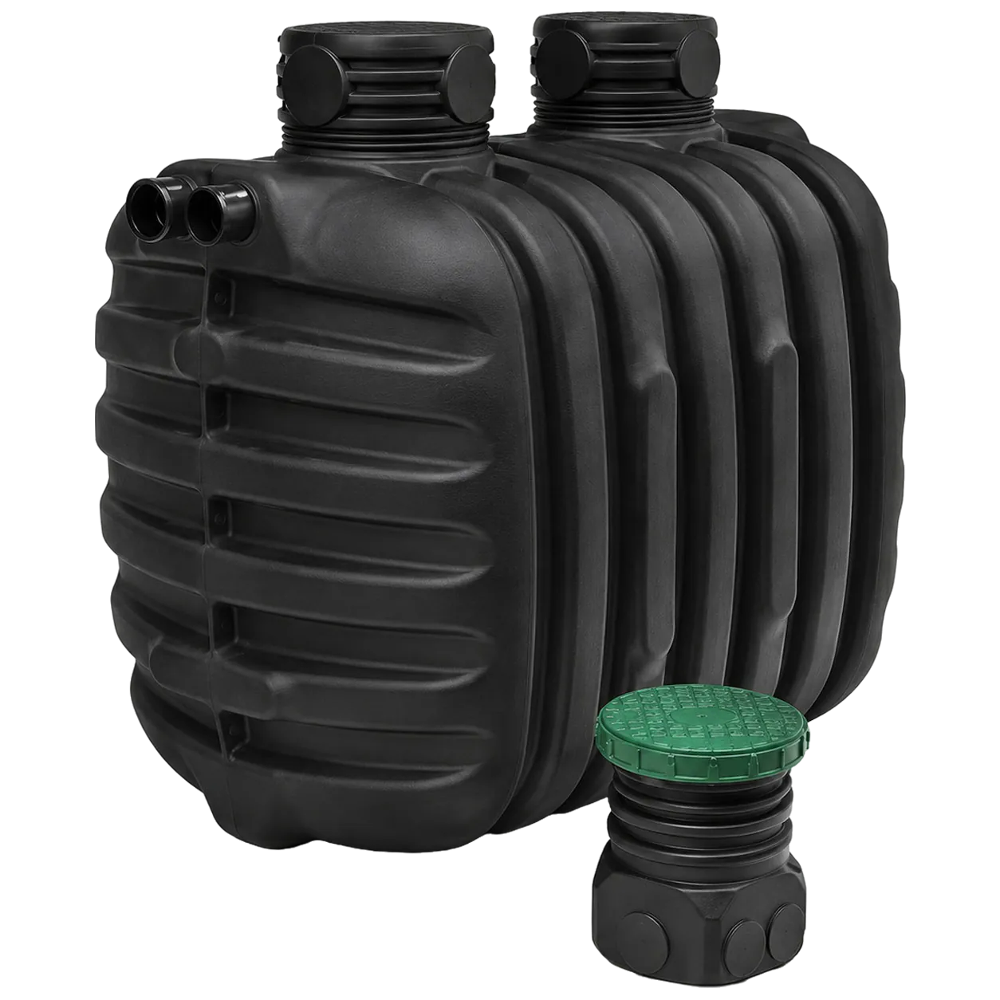
Epureco oldómedence
Nyaralóhoz, hétvégi házhoz, ahol nincs folyamatos terhelés vagy áramellátás. Gravitációs, áram nélküli megoldás; körülbelül kétévente szippantást és rendszeres baktériumfrissítést igényel.
2004 óta · több mint 3 800 megvalósított rendszer országszerte
Az ÖkoTech-Home biológiai szennyvíztisztító, oldómedencés és nagyobb kapacitású rendszereket gyárt és telepít családi házakhoz, nyaralókhoz és létesítményekhez. Hogy melyik irány való az adott ingatlanhoz, azt a használat, a várható terhelés, a telek adottságai és a kezelt víz elhelyezése együtt dönti el.
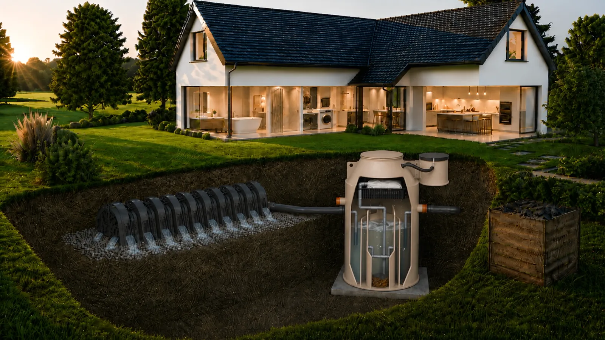
3 800-nál több rendszer országszerte
Két évtized telepítési tapasztalata csatorna nélküli ingatlanokon.
EN 12566-3 · CE-jelölés
A berendezés akkreditált laboratóriumi vizsgálat alapján minősített.
Construma Nagydíj, 2014
Szakmai zsűri által díjazott fejlesztés.
ISO 9001 · esztergomi gyártás
Saját fejlesztés, saját gyártási háttér.
Kiinduló helyzet
A szennyvízkezelést már a tervezésnél érdemes tisztázni: hová kerül a berendezés, milyen mélyen jön ki a cső, hová megy a kezelt víz, és milyen engedélyezési feltételek vonatkoznak a telekre.
Építkezés előtt állokIlyenkor nem az új rendszer az egyetlen kérdés. Azt is tisztázni kell, mi történik a meglévő emésztővel, hogyan zajlik az átállás, és mikortól szűnik meg a szippantás.
Emésztőt váltanék kiA ritkább használat gyakran más technológiát kíván, mint egy állandó lakóház. Itt különösen fontos a várható terhelés és az áramellátás tisztázása.
Nyaralóhoz keresek megoldástDöntés előtt érdemes megtudni, milyen szennyvízkezelés engedélyezhető az adott telken, és milyen feltételekkel.
Telekvásárlás előtt tájékozódomTechnológiák
Csatorna nélküli ingatlannál többféle rendszer kerülhet szóba, de ezek nem ugyanazt végzik.
A zárt tároló gyűjt. Nem kezeli, csak tárolja a szennyvizet a következő szippantásig. Áramot nem igényel, viszont rendszeres szippantást igen — ehhez a szippantóautónak hozzá kell férnie a tartályhoz. Kezelt víz nem keletkezik, mert a rendszert semmi nem hagyja el a szippantáson kívül. Ott van a helye, ahol a helyi adottságok semmilyen talajba jutást nem engednek, és más megoldás nem lehetséges.
Az oldómedence ülepít és részlegesen kezel. Gravitációsan, áram nélkül működik. A szennyvíz előtisztítása a medencében történik, a tényleges tisztulás nagyrészt a szikkasztómezőben, a talajban zajlik — ezért az oldómedence szikkasztóképes talajt kíván. Karbantartást igényel: rendszeres szippantást és a baktériumkultúra fenntartásához időszakos adalékolást.
A biológiai szennyvíztisztító ténylegesen tisztít. A tartályban élő baktériumkultúra lebontja a szennyvíz szerves anyagát, a folyamat végén tisztított víz távozik, amely elszivárogtatható és gyökérzónás hasznosításra alkalmas. Ehhez viszont áramellátás és rendszeres terhelés szükséges.
| Zárt tároló | Oldómedence | Biológiai szennyvíztisztító | |
|---|---|---|---|
| Mit csinál | Gyűjt | Ülepít | Tisztít |
| Szippantás | Rendszeresen | Kétévente | Nem szükséges |
| Áramigény | Nincs | Nincs | Van (egy kompresszor) |
| Kezelt víz | Nincs | Részlegesen kezelt | Elszivárogtatható, öntözésre alkalmas |
| Mikor jöhet szóba | Ha más nem lehetséges | Időszakos használatnál, áram nélküli helyen | Állandó használatnál |

Nyaralóhoz, hétvégi házhoz, ahol nincs folyamatos terhelés vagy áramellátás. Gravitációs, áram nélküli megoldás; körülbelül kétévente szippantást és rendszeres baktériumfrissítést igényel.
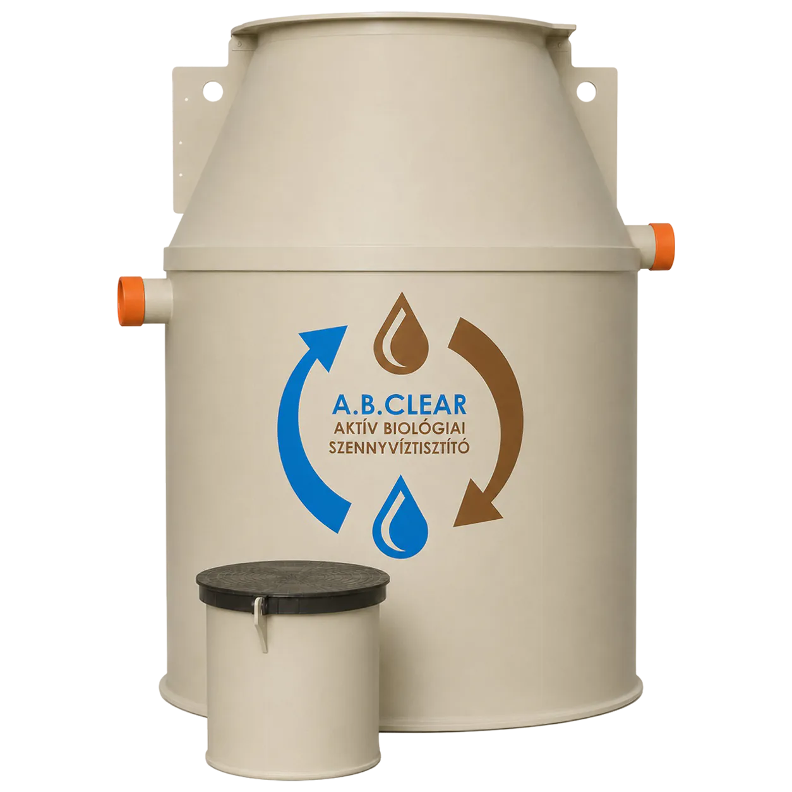
Állandó használatú családi házakhoz és kisebb létesítményekhez, 1–50 fős kapacitásig. Szabadalmaztatott iszapzsákos technológiával, szippantás nélkül.
Mindkettőt mi gyártjuk. Az ajánlatunkban ezért mindig a használat és a telek adottságai döntenek, nem a termékkategória.
Megoldásaink
Saját fejlesztésű, Magyarországon gyártott rendszerek — a családi háztól az intézményi kapacitásig.
Melyik illik az Ön helyzetéhez, azt a használat és a telek adottságai döntik el, konzultáció után.
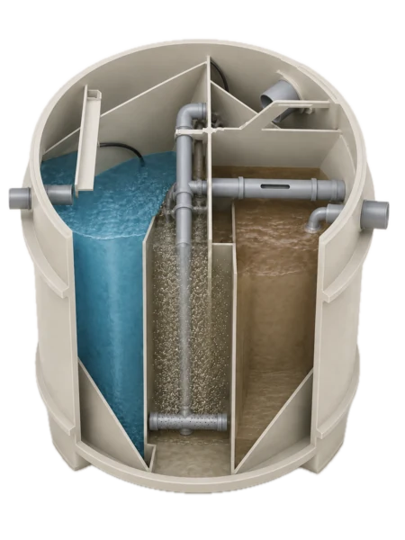
Állandó használatú családi házakhoz és kisebb létesítményekhez, 1–50 fős kapacitásig. Szabadalmaztatott iszapzsákos technológiával, szippantás nélkül.
Tovább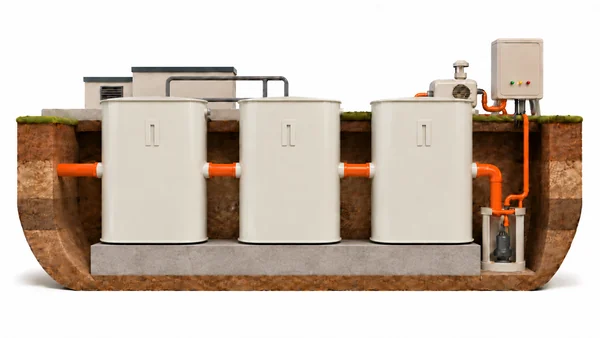
Nagyobb kapacitásra: intézmények, üzemek, közösségek és településrészek. Referenciáink között szerepel Bakonypéterd négy darab 50 fős berendezésből álló, közműszolgáltató által üzemeltetett telepe is.
TovábbNyaralóhoz, hétvégi házhoz, ahol nincs folyamatos terhelés vagy áramellátás. Gravitációs megoldás, körülbelül kétévente szippantással.
Tovább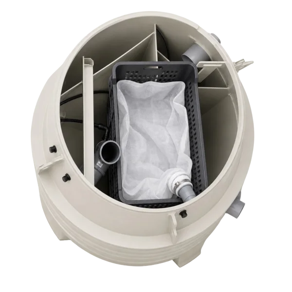
Egyszerűbb, stabilabb üzemeltetés, szippantás nélkül, komposztálható iszappal. Több országban szabadalmaztatott saját fejlesztésünk.
TovábbAI-alapú döntéstámogató
Pár rövid kérdés alapján megmutatjuk, milyen tényezők befolyásolják az Ön esetében az árak alakulását, és egy előzetes ársávot is adunk.
Az előzetes ársáv segít a tervezésben és a döntésben. Az eredmény tájékoztató jellegű, a pontos árat szakértői konzultáció után határozzuk meg.
Az üzemeltetés éves költsége
A szennyvízkezelő rendszer évtizedekig üzemel. A valódi költsége ezért nem a telepítésnél dől el, hanem az évente ismétlődő tételekben. Ezek technológiánként másból állnak össze. Az sem mindegy, hogy a tétel fix, vagy a háztartás méretével és a szolgáltatási díjakkal együtt nő.
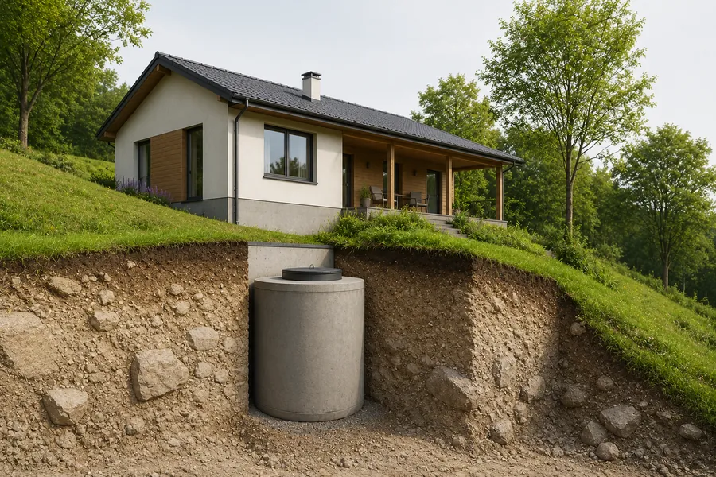
Egyetlen tétel: a szippantás. Háromfős háztartásnál, átlagos vízfogyasztással évi 512 000 forint nagyságrendű. Ez a tétel két irányban is nő: a háztartás méretével és a szolgáltatási díjak emelkedésével.
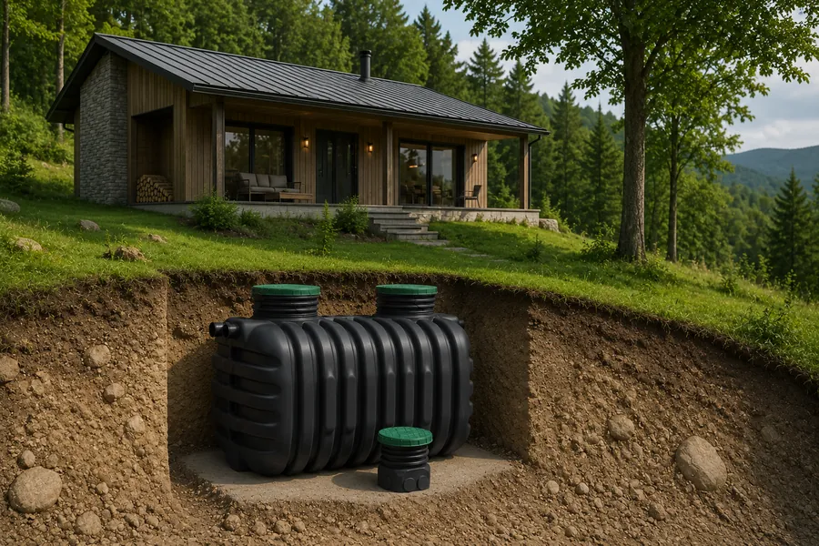
Áramot nem fogyaszt. A használat intenzitásától függően néhány évente esedékes egy iszapeltávolítás. A piacon kapható rendszerek egy részénél a forgalmazó rendszeres baktériumadalékot is előír. Az Epureco üzemeltetési tételeit a technológia aloldalán részletezzük.
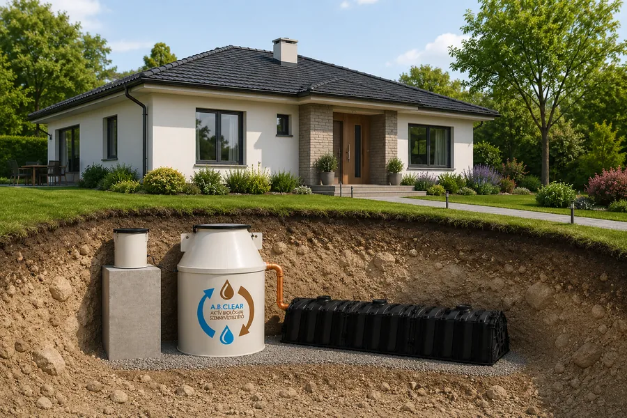
A kompresszor áramfelhasználása 24 000 forint, az iszapzsák 1000 forint, a membráncsere időarányosan 10 500 forint. Ez háromfős háztartásnál összesen évi 35 500 forint. Szippantás és adalékanyag nincs: a fölösiszapot a szabadalmaztatott iszapzsák gyűjti, komposztálható formában. Az áramköltségen kívül a tételek lényegében függetlenek a háztartás méretétől.
* A számítás háromfős háztartásra készült, fejenként napi 135 liter vízfelhasználással, piaci átlagdíjakkal.
Tudástár
A leggyakoribb elakadási pont.
Nem elég, hogy van hely a tartálynak — azt is látni kell, hová megy a víz, és hogy a helyi előírások engedik-e. Ez dönti el, hogy egyáltalán szóba jöhet-e biológiai rendszer.
Pl. mennyi hely kell az elszivárogtatáshoz, mit jelent a talaj szikkasztóképessége, és mi a teendő, ha a helyi adottságok nem engedik a szikkasztást.
A telek mérete ritkán a szűk keresztmetszet. A talajszerkezet, a lejtés, a talajvízszint és az határozza meg a kialakítást, hogy milyen mélyen jön ki a szennyvízcső a házból.
Pl. magas talajvíz, agyagos talaj, a cső mélysége.
A biológiai rendszerben élő baktériumkultúrát a beérkező szennyvíz táplálja, ezért rendszeres terhelést kíván. Áramellátás nélküli telken pedig egyáltalán nem üzemeltethető.
Pl. nyaraló és időszakos használat, áram nélküli telek.
Településenként eltérhet, milyen eljárás szükséges: van, ahol bejelentés elegendő, máshol részletesebb vízjogi vagy hatósági eljárás.
Pl. az engedélyezés menete, EN 12566-3, szükséges dokumentáció.
Ha már van emésztő vagy zárt tároló a telken, az nemcsak a technológiaválasztást érinti, hanem a kivitelezést is.
Pl. a régi emésztő sorsa, az átállás menete.
Pl. mit kell előkészíteni a telepítés napjára, mikor szükséges helyszíni felmérés.
Amit a tulajdonosnak tudnia kell a mindennapi használatról és a hosszú távú üzembiztonságról.
Pl. mit szabad a rendszerbe juttatni, az iszapzsák kezelése, szaghatás.
AI támogatás
Töltsön fel 2–3 ajánlatot, és megmutatjuk, miben térnek el: mit tartalmaznak, mi hiányzik belőlük, milyen későbbi költségekkel számolhat, és mire érdemes rákérdezni döntés előtt.
Átlátható összehasonlítás a fontos szempontok alapján.
Megmutatjuk, mi nem szerepel az ajánlatokban, de fontos lehet.
Látja, milyen karbantartással és későbbi költségekkel kell számolnia.
Személyre szabott kérdéseket kap a kivitelezőnek.
Az elemzés tájékoztató jellegű, nem helyettesíti a helyszíni felmérést és a szakértői véleményt.
Az adatait bizalmasan kezeljük.
Tipp: nevezze el az ajánlatokat (pl. Kivitelező 1, Kivitelező 2), hogy könnyebb legyen azonosítani őket.
Ajánlat A
Ajánlat B
Ajánlat C (opcionális)
| Szempont | Ajánlat AZárt tároló | Ajánlat BBiológiai tisztító | Ajánlat COldómedence |
|---|---|---|---|
| Teljes ár (bruttó) | 1 250 000 Ft | 2 890 000 Ft | 1 690 000 Ft |
| Milyen technológia? | Gyűjtzárt tároló | Tisztítbiológiai | Ülepít+ elszivárogtat |
| Mire van méretezve? | Nincs adat | Méretezve 5 fő · állandó lakás | Feltételezettkb. 4 fő |
| Telepítés tartalma | Csak berendezés | Teljes földmunka + bekötés + beüzemelés | Részleges földmunka nélkül |
| Tisztított víz elvezetése | Nem relevánsgyűjtő rendszer | Nincs megadva | Elszivárogtatás benne van |
| Engedélyezéshez | Nincs adat | CE / EN 12566-3 dokumentáció + helyszínrajz | Nincs adat |
| Telekadottságok | Nem vették figyelembe | Helyszíni felmérés talaj + talajvíz | Feltételezésekre épül |
| Éves üzemeltetési költség | Magasrendszeres szippantás (4–6 hetente) | Alacsony áram + évi 1 szerviz | Közepesidőszakos szippantás |
| Felelősség | Nincs adat | Egy felelős gyártó = kivitelező = szerviz | Több szereplő |
| Garancia és szerviz | Nincs adat | Hazai szerviz alkatrész-háttérrel | Nincs adat |
| Hiányzó / tisztázandó tétel | 6 tétel | 1 tétel | 4 tétel |
Bizonytalan? Szakértőnk átnézi az ajánlatokat, és személyre szabott tanácsot ad.
Szakértői átnézés kéréseProjektek és tapasztalatok
A legnagyobb számban családi házakhoz telepítünk, de több egész település szennyvízkezelését is megoldottuk, ingatlanonkénti egyedi berendezésekkel vagy központi teleppel.
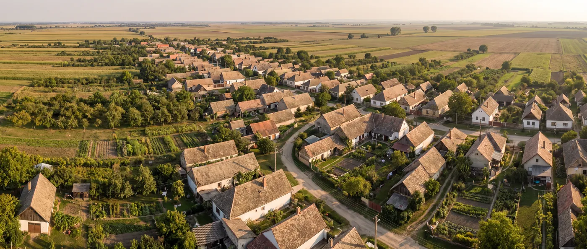
Kiemelt projekt
Csikvándon nem épült ki közcsatorna, így az egész település szennyvízkezelését kellett megoldani, ingatlanonként telepített egyedi berendezésekkel. 2017 és 2018 során 128 A.B. Clear berendezést telepítettünk és üzemeltünk be, házanként. Ez volt Magyarországon az elsőként lezárt, elkészült szennyvíztisztítási projekt a Vidékfejlesztési Program pályázati keretében.
128 berendezésországos elsőség
Megnyitom a projektet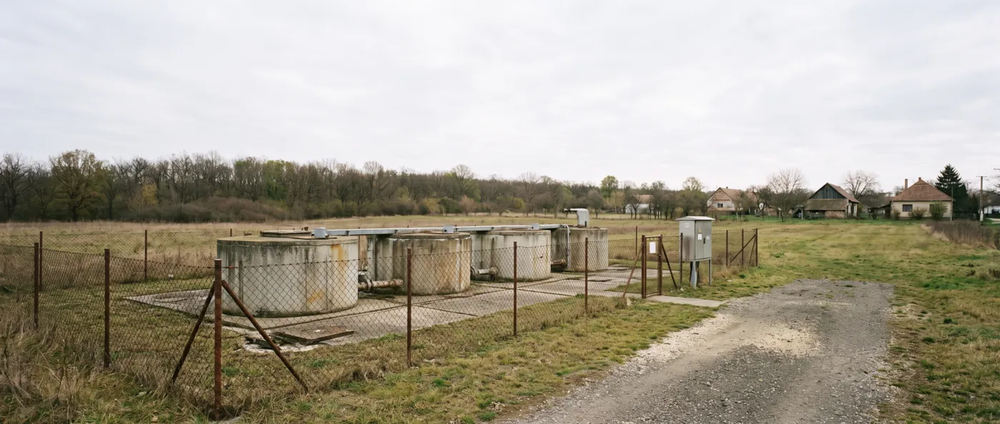
Bakonypéterd nem ingatlanonkénti berendezéseket, hanem központi szennyvíztisztítót kapott — a tervezéstől a működő telepig. A telep négy darab 50 fős berendezés összekötésével működik, teljesen elektronikus vezérlésű, távüzemben irányítható. A tervezést is mi vállaltuk, a próbaüzemet mi folytattuk le. A telepet azóta a területi közműszolgáltató, a Pannon-Víz Zrt. üzemelteti.
4 × 50 fős egységközműszolgáltató üzemelteti
Megnyitom a projektet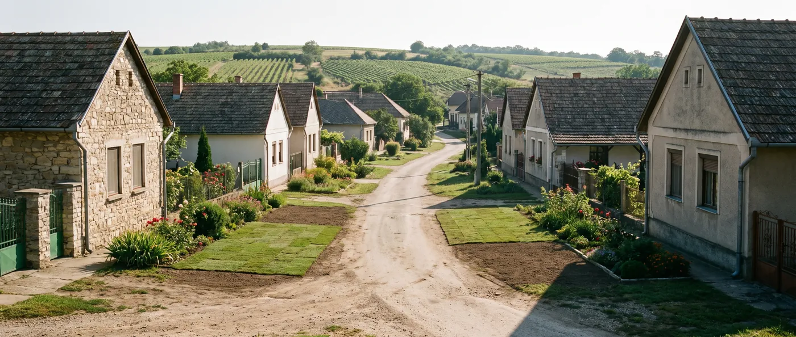
Diósberényben szintén településszintű, ingatlanonkénti egyedi szennyvízkezelésre volt szükség. 2022-ben 90 A.B. Clear berendezést adtunk át, saját csapattal telepítve és beüzemelve. A rendszerek a lakosok megelégedésére működnek.
90 berendezés
Megnyitom a projektet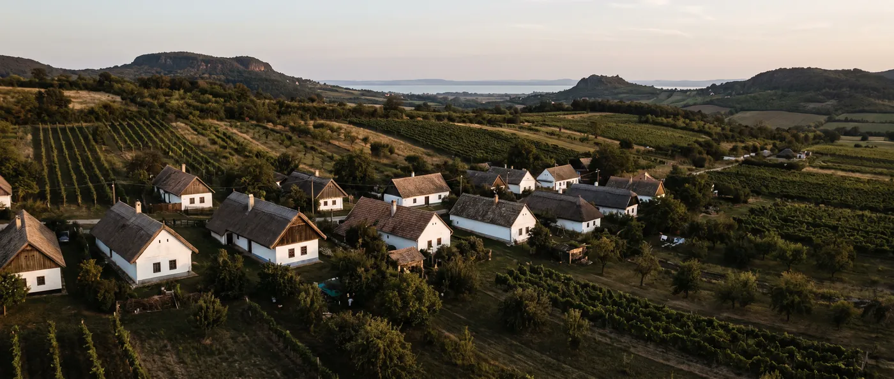
2011-ben, minisztériumi mintaprojekt keretében egy egész kistelepülés szennyvízkezelését kellett megoldani. A telepítést és beüzemelést saját munkatársainkkal végeztük, alvállalkozót kizárólag a négy monitoringkút létesítéséhez vontunk be.
minisztériumi mintaprojekta kezdet
Megnyitom a projektetA projektek a számokat mutatják. Az alábbi visszajelzések azt, milyen együtt élni a rendszerrel — évek távlatából.
Végre nincs szag, és nincs több szippantás-szervezés
A tisztítóberendezés hibátlanul, szagtalanul és csendben üzemel. A tisztított víz kristálytiszta. A berendezés karbantartási igénye minimális. Mindenkinek ajánlom!
Végre nincs szag, és nincs több szippantás-szervezés
Megszabadultunk a szippantással járó kellemetlen szagoktól, költségektől és szervezési feladatoktól. Az utcánkban mi vagyunk a harmadik család, aki a berendezés előnyeit élvezi.
A tisztított vizet tényleg használom a kertben
Oly mértékben megtisztítja a szennyvizet, hogy locsolóvíznek tudjuk használni a kertünkben, az elválasztott iszap pedig kiválóan komposztálható. Nálunk közel négy éve kifogástalanul működik.
A tisztított vizet tényleg használom a kertben
Jó alternatív megoldás, öntözésre nagyon jól fel tudom használni a tisztított szennyvizet.
Nem bántuk meg — és a cég ott volt utána is
Nem csak a berendezés üzembehelyezésekor kaptunk szakszerű figyelmet, hanem az utánkövetés is folyamatos!
Nem bántuk meg — és a cég ott volt utána is
Amennyiben kérdésem-kérésem volt, arra haladéktalanul korrekt választ kaptam. Két év használat után kijelenthetem, hogy nem csak környezetkímélő, hanem költséghatékony is.
Nem bántuk meg — és a cég ott volt utána is
Nagyon jó döntés volt az ÖkoTech-et választanom a sok versenytárssal szemben. A rendszer tökéletesen működik, tudja mindazt, amit ígértek.
Nem bántuk meg — és a cég ott volt utána is
Rengeteg ötlettel, tapasztalattal segített nekünk abban, hogy a szennyvízkezelőt hibák nélkül tudjuk üzemeltetni. Az Önök cégét mindenkinek csak ajánlani tudom.
1 / 8
Szolgáltatási folyamat
Nem csak berendezést szállítunk. A döntéshez szükséges telekadatokat, a műszaki dokumentációt, a gyártást, a telepítést és az üzemeltetési hátteret is ugyanahhoz a rendszerhez kapcsoljuk.
Itt dől el: milyen kialakítás jöhet szóba az adott ingatlanon.
Itt dől el: az A.B. Clear biológiai szennyvíztisztító, az Epureco oldómedence vagy egy nagyobb kapacitású rendszer illik-e a helyzethez.
Itt dől el: milyen dokumentációval és milyen eljárással érdemes továbbmenni.
Itt dől el: hogyan lesz a tervből működő berendezés.
Itt dől el: mit kell tudnia a tulajdonosnak a mindennapi használatról.
Itt dől el: hogyan marad a rendszer hosszú távon üzembiztos.
Előzetes konzultáció
Az első beszélgetés nem értékesítés és nem helyszíni felmérés. Az induló irányt tisztázzuk. A végére három dolognak kell látszania:
+36 33 200 211 — 2004 óta ugyanezen a számon.
Hasznos, ha kéznél van: helyrajzi szám, helyszínrajz vagy tervrajz, a meglévő emésztő adatai, fotók a telekről, korábbi ajánlatok.
Elküldi az alapadatokat: a telek, a használat, a meglévő rendszer és az elérhető dokumentumok adatait.
Átnézzük, mi tisztázható előzetesen: a műszaki irányt, a hiányzó adatokat, az engedélyezési kérdéseket.
Egyeztetünk a következő lépésről: további adatbekérés, helyszíni felmérés vagy ajánlat-előkészítés.
Ajánlatot csak tisztázott adatok alapján készítünk. Automatikus értékesítési folyamat nem indul.
Gyakori kérdések
Rövid válaszok a döntés előtt leggyakrabban felmerülő kérdésekre. A részletes műszaki, engedélyezési és üzemeltetési háttér a kapcsolódó tudástáranyagokban érhető el.
Az engedélyezés menete településenként eltérhet. Van, ahol egyszerűbb bejelentés elegendő, máshol részletesebb vízjogi vagy hatósági eljárás szükséges. Az első lépés mindig ugyanaz: tisztázni kell a helyi előírásokat, a kezelt víz elhelyezését és a telek adottságait.
Elsősorban a kezelt víz elhelyezésétől, a talaj szikkasztóképességétől, a talajvízszinttől, a csőkivezetés mélységétől és a helyi előírásoktól. Nem elég azt tudni, van-e hely a tartálynak. Azt is látni kell, hová kerül a víz.
A magas talajvíz nem feltétlenül kizáró ok, de külön műszaki kialakítást igényelhet. Ilyenkor a tartály védelmét és a kezelt víz elhelyezését külön kell megtervezni.
Jellemzően telken belüli elszivárogtatással vagy gyökérzónás hasznosítással kerül vissza a környezetbe. A feltételeket a talaj, a talajvíz, a helyi előírások és a választott technológia együtt határozzák meg.
A zárt tároló gyűjti a szennyvizet, ezért rendszeres szippantást igényel. Az oldómedence ülepít és részlegesen kezel. A biológiai szennyvíztisztító ténylegesen biológiai tisztítást végez, amelynek végén tisztított víz távozik.
Nem minden esetben. A baktériumkultúra rendszeres terhelés mellett működik a legjobban. Időszakos használatnál külön kell vizsgálni, hogy a biológiai szennyvíztisztító, az oldómedence vagy más megoldás illik-e az ingatlanhoz.
A meglévő emésztőt szakszerűen kell kezelni: kiürítés, megszüntetés, betömedékelés vagy más funkcióra alakítás merülhet fel. Ezt a telepítés előtt kell tisztázni, mert a régi rendszer helye és állapota a kivitelezést is befolyásolja.
Nem. Az iszapzsákos technológia miatt a rendszer nem igényel rendszeres szippantást. A tisztítás során keletkező fölösiszap zsákban gyűlik, víztelenített formában kivehető, majd komposztálható.
Megfelelő működés mellett nincs szaghatás. A biológiai tisztítás levegőztetett folyamat, nem rothasztásra épül. Az erős szag jellemzően hibára, túlterhelésre vagy karbantartási problémára utal.
Az A.B. Clear rendszerben a baktériumkultúra önfenntartó, a beérkező szennyvíz táplálja. Normál használat mellett nincs szükség baktériumtablettára, porra vagy más adalékanyagra.
A technológiától függ. Zárt tárolónál a fő tétel a szippantás. Biológiai rendszereknél áramfogyasztás, alkatrészcsere, karbantartás és iszapkezelés merülhet fel. Az A.B. Clear esetében nincs rendszeres szippantás és nincs adalékanyag, ezért az éves költség jobban tervezhető.
A végleges ár nem csak a berendezéstől függ. Számít a kapacitás, a földmunka, a telek hozzáférhetősége, a csőkivezetés mélysége, a talajvíz, a kezelt víz elhelyezése, és az is, ki végzi a telepítést. Pontos ajánlatot ezért csak az ingatlan adatainak ismeretében lehet adni.
Ellenőrizze, mire terjed ki az ajánlat: csak a berendezésre, vagy tartalmazza a telepítést, a földmunkát, a kezelt víz elhelyezését, az engedélyezési dokumentációt, a beüzemelést és a szervizhátteret is. A hiányzó tételek később külön költségként jelenhetnek meg.
Nem feltétlenül. Sok esetben a telek alapadataiból, a használat módjából, a meglévő rendszerből és a rendelkezésre álló rajzokból már látszik, milyen irányba érdemes továbbmenni. Helyszíni felmérésre akkor van szükség, ha a műszaki vagy engedélyezési kérdések ezt indokolják.